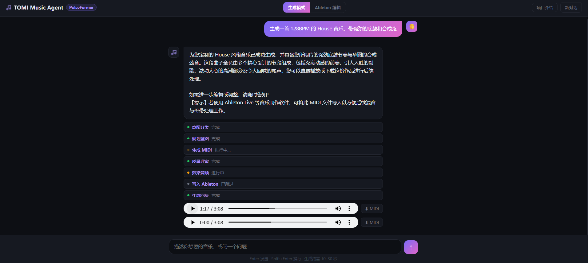

每个节点独立流式输出 · LLM-as-Judge 自动质量评审 · 低分自动回溯重试
从 RAG 知识检索到 DAW 实时写入，每个模块独立可扩展
从现象到根因的工程判断，每个问题都有针对性解法而不是绕过
{"bar_39":[{"time":"b39.00","note":"Kick"}]} 格式，无法被系统解析执行{"op":"transpose"}），Python str.format() 将 {} 解析为变量占位符，导致 KeyError 崩溃每项技术都有明确的选型理由，没有冗余依赖